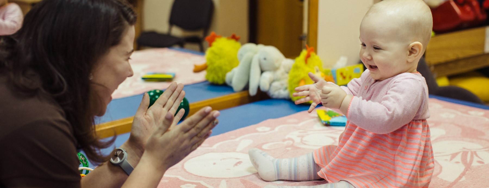
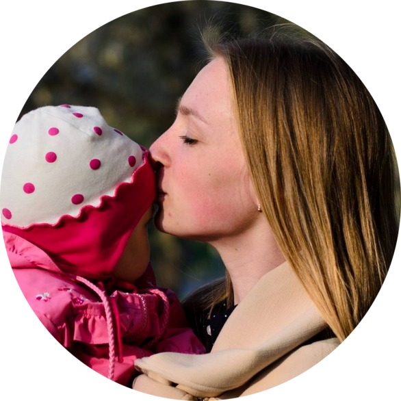
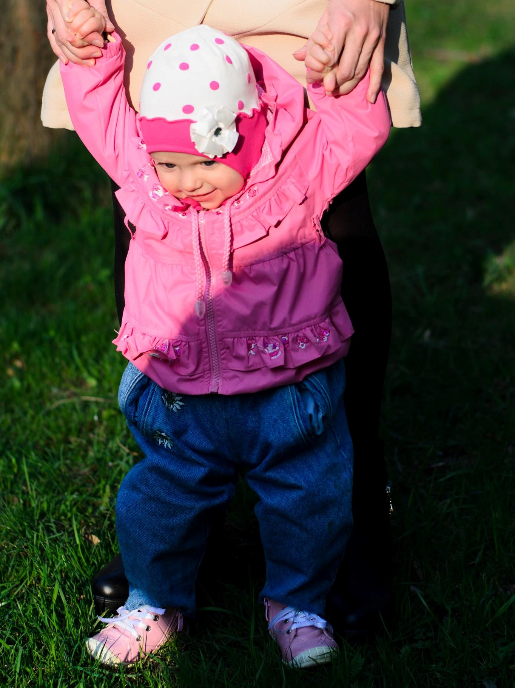
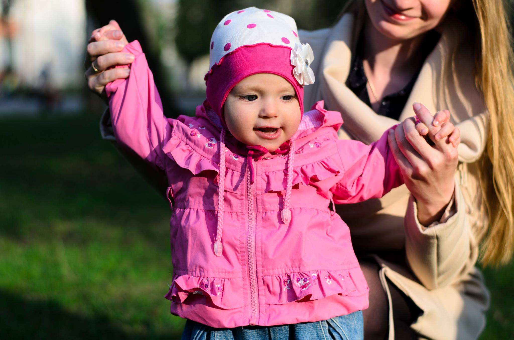
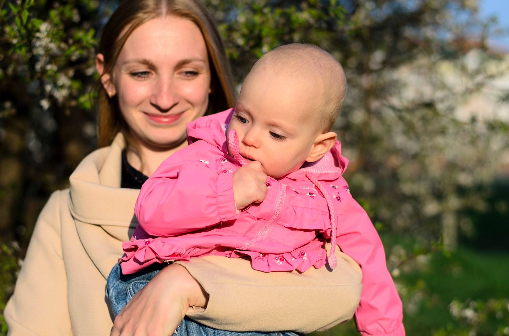

- Навколо всього процесу немає ореолу скорботи, який так часто зустрічає нас в медичних закладах, лікарі скрушно хитають головами, розповідаючи про "хрест" і "про народиш ще". Тут виявилось, що це не хрест чи родинне прокляття, а чудова дівчинка з якою потрібно багато праці і любові.
- Мені показали багото рутинних моментів, де моя жертовність, як виявилось була зайва: гратися з дитиною вночі (в Юлі значно зміщені ритми сну та бадьорості), тримати для неї пляшечку, згодом виявилось, що вона чудово може робити це сама та багато іншого, що значно зменшило і без того космічне почуття провини.
- Я побачила купу корисних девайсів, для особливих дітей, які в супермаркеті не продаються, тому або фахівець порадить тобі вертикалізатор, або ти будеш тримати в вертикальному положенні важкеньку дитину, яка сама стояти не може, а їй це корисно і потрібно.
- І останній і найважливіший урок - Любов. Коли логопед цілує чужу дитину з інвалідністю, яка не робить того чого від неї очікують в її віці і поводиться не так, як би хотілось, ти теж починаєш любити її такою як вона є, без примарних преспектив і очікувань, а просто зараз - не досконалою і не зручною для багатьох, не такою, як всі чекали, а токою як вона є зараз.


Раннє втручання
Раннє втручання — це послуга для родин, які виховують маля до трьох повних років із порушеннями розвитку або ризиком їх виникнення. Мета послуги — підвищити якість життя родини, підтримати батьків, сприяти розвитку дитини та її соціальній інклюзії.Якщо говорити про наш досвід, раннє втручання - це послуга, яка допомогла побачити іншу преспективу. Це перше місце після народження Юлі, де я побачила інші сім'ї з дітьми з інвалідністю, де батьки усміхались один до одного і їздили на дорогій автівці, де спеціалісти мали чіткий план, і я вперше була впевненою що все роблю правильно.
Я могла б писати про наші враження від програми раннього втручання дуже багато
але боюсь розгубити вашу увагу, тому залишу факти, які найяскравіше врізались в мою пам'ять і змінили наше сприйняття Юлі:


